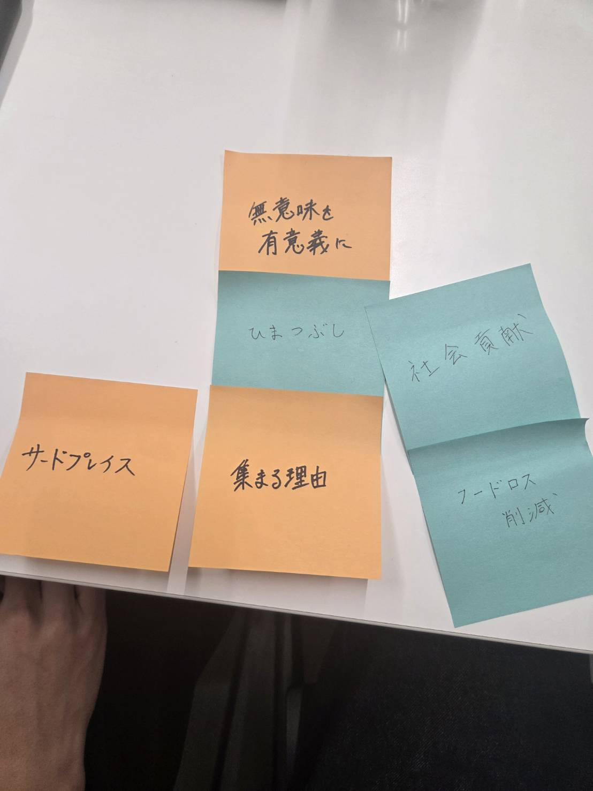

パーパス
パーパスを考える
24h開いてるラウンジ
自分たちの考えたビジネスは、24h空いているラウンジである。
環境問題を考慮し、コンビニの廃棄商品を置くなどの工夫を考えた。
発散
パーパスを考えろと言われたが、全く捗らずに壁にぶつかってしまった。
そこでやまさんが思いついたのがポストイットに単語を書いて発散する方法だった。
初心に帰ったこの方法で話し合いがかなり進んだ。

完成
最終的に決まったパーパスは以下の通り。
「無意味を有意義に さまざまなライフサイクルに寄り添うみんなの家のような立ち位置を目指します」
これは、持て余してしまった無意味な時間を社会貢献という有意義な時間に変えることができるという意味を込めた。
誰でも気軽に行けて、時間にとらわれないというコンセプトにぴったりであると感じた。
これを元にビジネスとして深めていきたい。